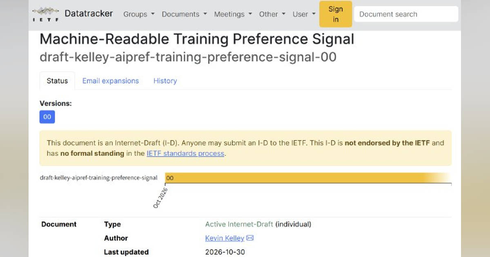
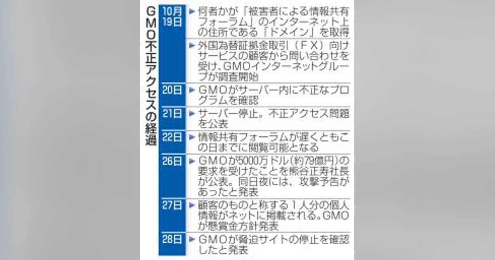
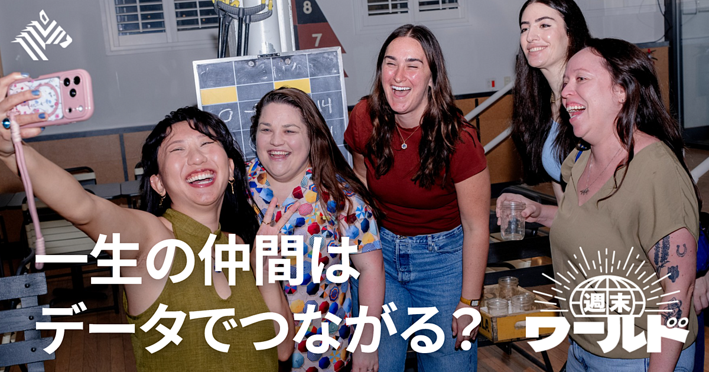

AI学習への利用拒否をrobots.txtで一括指定へ OpenAIやGoogleなどが対応表明
発行日時：2026年11月1日 08:45:26 JST
NewsPicks原文を読む

AI学習への利用可否をrobots.txtで示す共通ルールの解説記事画像 あなたに関係ありそうな理由 公開する記事や画像がAI学習にどう使われるかは、コンテンツ運営や契約の判断に関わります。複数のAI企業に意思を伝える設定の動きを知る材料です。
概要 AI企業がウェブ上の文章や画像を学習に使う際、サイト運営者の意思をどのように伝えるか。共通の仕組みを設ける動きが進んでいる。OpenAI、Google、Microsoftは10月30日、robots.txtでAI学習の許可・拒否を示す仕様に対応すると表明し、Anthropicも実装を始めた。記事によれば、IETFに提出された草案では専用のUser-Agent「__usage_ai-training」に対してAllowまたはDisallowを記述し、クローラーへ機械的に伝える。
これはサイトを検索用に巡回してよいかを示す既存ルールとは別の信号だ。従来のrobots.txtの指定だけではAI学習への意思を一律に示せず、対応する設定を置かない場合も「許可」とは限らず、意思表示がない状態になる。Google-ExtendedやMicrosoftのページ単位の設定も紹介されているが、複数社をまとめて対象にできる共通の方法を求める声が背景にある。
各社の反映時期は一律でない。OpenAIは数カ月以内、Googleは2027年、Microsoftは2027年2月1日から適用する方針という。会社ごとに既存の指定との優先順位も異なる可能性があり、記事は利用者側が何を指定できるかを整理している。草案はまだ標準として確定したものではなく、対応予定と実装済みの区別も必要だ。
ウェブで記事や画像を公開する企業にとって、AI学習への利用を認めるかは編集、契約、収益化の判断と結び付く。robots.txtは技術的な意思表示をまとめる入り口になるが、すべてのAI用途を同じように指定できるわけではない。検索用のクロール、モデル訓練、推論時の参照、学習済みモデルの利用は別の話として整理する必要がある。今後は草案の確定、各社の実装時期、過去の個別指定をどう扱うかを確認したい。記事には、EU AI Actの行動規範や用途別制御を始めたCloudflareの動きも出てくる。共通信号が広がれば、サイトごとに複数企業の設定を管理する負担を減らせる可能性がある一方、掲載内容を誰がどう使えるかの判断は運営者に残る。まず自社が公開するコンテンツと現在の設定を棚卸しし、関係者間で許可範囲を定める題材だ。
仕事や会話で使える一言 「クロールの許可とAI学習への利用許可は、別々に整理しておきたいですね。」
【ミニ教養】1年後、人間がAIに勝てる「唯一の性質」とは
発行日時：2026年11月1日 05:30:02 JST
NewsPicks原文を読む
人間とAIの関係を考えるNewsPicksオリジナル記事画像 あなたに関係ありそうな理由 AIが進むなかで、どの仕事を任せ、人間同士の関係や判断をどう残すかは、職場の役割分担や学び直しにも関わります。
概要 NewsPicks編集部の森川潤・NY支局長が、AIの進歩と人間に残る性質を、Box創業者アーロン・レヴィ氏、ピーター・ティール氏らの発言を手掛かりに考える。森川氏は自身の動画制作で、AIに関連資料を探させ、PC内ファイルから必要な情報を集め、構成や字幕の方針まで提案させた経験を紹介する。数カ月前には難しかった作業が、短期間で可能になる。昨日できなかったことを今日も無理だと決めつけず、能力の変化を定期的に試す必要があるという。
レヴィ氏は、AIの先端を使いこなす人とそれ以外の間で能力差が広がると指摘する。記事は、生成AIの性能が短期間で上がるなか、企業と個人が期待値を更新しないと、仕事の進め方や役割の変化を見落とすと説明する。Anthropicのアモデイ氏が示した2027年の予測、動画制作や数学、翻訳をめぐる例も紹介される。ただし未来予測は確定した結果ではない。
ティール氏は、ChatGPTの登場によって、人間だけの特性と考えられていた言語能力がAIにも備わり始めたと見る。意識のような性質は依然として人間に関わる問いだが、それに加えて、家族、会社、地域社会との関係に注意を向ける。AIが単純作業を引き受ければ、人は関係づくりや人と協働する時間を増やせるかもしれない、という見方だ。記事の題名は「1年後に勝てる唯一の性質」とうたうが、本文は一つの能力を断定するより、急速な変化のなかで人の価値を探る。題名の断定的な言い回しに比べ、記事は複数の専門家や経営者の発言を並べている。予測として出た部分を現在の能力と取り違えない読み方が必要だ。
この話は、AIに負けない能力を一つ覚えれば安心という結論ではない。機械の能力が伸びた時、人間同士の信頼や関係をどう育てるか、会社が仕事の分担や学び直しをどう変えるかが問われる。森川氏は、早く変化を知り、いったん絶望するくらい現実を受け止めることが、次の進み方を決める助けになると記事末のコメントで述べている。表示コメントでは、幸福や問いを立てる力、人間関係をAIとの差として挙げる意見がある一方、競争の土俵自体を問う声もあった。予測や意見と、すでに確認できた製品能力を区別しながら、身近な業務でAIに任せられる範囲と、人が残す判断を具体的に見直したい。
仕事や会話で使える一言 「AIの性能だけでなく、人と一緒に進める仕事の価値も見ていきたいですね。」
攻撃者、被害サイト開設か ＧＭＯ公表前に開設準備
発行日時：2026年11月1日 05:02:54 JST
NewsPicks原文を読む

GMO攻撃と被害者向け情報共有サイトを扱う記事画像 あなたに関係ありそうな理由 サイバー攻撃では侵入経路だけでなく、攻撃者が被害企業の情報を集めて交渉に利用する流れも把握する必要があります。
概要 共同通信は、GMOインターネットグループへの攻撃をめぐり、攻撃者側が被害者向けの情報共有サイトを、GMOの公表前に準備していた可能性を報じた。2026年10月21日の被害公表前にサイトが作られていたかを、犯行声明サイトとの共通点から調べた。記事ではコードや構成、米国のサーバー、日本語表記、保存フォルダー名、閲覧権限の設計などが似ていたと説明する。
攻撃を受けた企業が、被害を公表した後にサイトを作ったのではなく、情報が出る前から同じ仕組みが用意されていたのなら、攻撃者は被害を把握していた企業を先回りして集めようとしていた可能性がある。被害者を一覧にして情報を共有させれば、各社の対応状況を追い、交渉を有利にする狙いが考えられる。ただし、サイトの共通点は準備に関する根拠であり、運営主体や意図を単独で確定する証明ではない。記事は専門家の見方を交え、疑いとして伝えている。
被害者向けサイトはすでに閉鎖されており、ほとんど閲覧されていなかった。共同通信が確認したのは、外から見られるサイトの構成などで、被害企業の内部システムにどこから侵入したかを確定したわけではない。記事は、攻撃側の準備と個別企業の脆弱性対応を同一視しないための情報も示す。表示コメントでは、脆弱性を以前から把握していた可能性に触れ、組織が事前対策を軽視しやすいという経験が語られた。これはコメントの指摘で、記事の確認事実とは分ける。
サイバー攻撃への対応は、侵入を止めるだけで終わらず、攻撃者が被害企業を集め、情報を共有し、交渉に使う動きも想定する必要がある。自社が公表していない情報が別の場所でどう使われているか、他の被害企業や専門家とどう連携するかが、初動の一部になる。記事はGMOの公表に先立つサイト準備を示したが、被害の範囲や侵入経路を新たに確定するものではない。発表された事実、取材で見つかった共通点、関係者の推測を分けて読むことが大切だ。今後はサイトを誰がどう作り、被害企業間の情報共有がどこまで行われたのか、調査で明らかになる点を追いたい。サイトが準備されたことと、実際に被害企業が利用したことは別であり、記事は閲覧がほぼなかったと伝える。こうした時系列を確かめると、攻撃者の意図と被害の実態を混同せずに済む。
仕事や会話で使える一言 「侵入だけでなく、被害情報を集める動きまで初動の確認項目にしたいですね。」
トランプ氏、ボルソナロ氏は「好きなだけ滞在できる」 米ブラジル関係の緊張継続も
発行日時：2026年11月1日 15:37:02 JST
NewsPicks原文を読む
トランプ氏とブラジルのボルソナロ前大統領を扱うReuters記事画像 あなたに関係ありそうな理由 首脳の発言、司法上の手続き、外交交渉が重なる事例です。政府の説明と報道を区別しながら、国際関係の変化を追う材料になります。
概要 Reutersによると、ドナルド・トランプ米大統領は10月31日、ブラジルを離れたジャイル・ボルソナロ前大統領について「好きなだけ米国に滞在できる」と述べた。ボルソナロ氏は選挙で敗れた後にブラジルを出国し、資金洗浄の捜査対象となっていた。ブラジル最高裁は同氏の旅券を無効にしている。Reutersは、人道上の一時的な入国許可を得て米国へ渡ったと報じた。
発言の背景には、ブラジルのルラ政権とトランプ政権の関係がある。両国の外相は数日内に再協議することで合意していたが、トランプ氏がボルソナロ氏を歓迎する姿勢を示したことで、対話が続く一方、緊張も残る可能性がある。Reutersは、ルビオ米国務長官が米政府の直接関与を否定した一方で、ホワイトハウス関係者が渡米を支援したとする報道も紹介する。発言、政府側の説明、関係者をめぐる報道を区別しておきたい。
ボルソナロ氏が自由に滞在できるという言葉は、入国を許可したという事実の説明とは異なる。実際の法的な滞在資格や期間がどうなっているかは、記事の発言だけでは決まらない。米政府は直接関与を否定する一方、別の報道では関係者の支援が伝えられている。こうした違いを追うことで、政治家の発言が実務上どこまで動きに反映されたかを確認できる。トランプ氏の「好きなだけ」という表現を、無期限の滞在資格が正式に認められた意味だと受け取るのは早い。Reutersが伝えたのは人道上の一時許可であり、発言と実際の法的な手続きは別に確認する必要がある。ルビオ氏は米政府の直接関与を否定した一方、ホワイトハウス関係者が渡米を支援したとの報道があるため、支援がどの立場で行われたのかも明らかではない。
記事は、ボルソナロ氏の捜査や旅券無効化といったブラジル国内の事情を背景に、受け入れ発言が外交にもたらす影響を見ている。表示コメントでは、亡命者や元指導者を受け入れること自体が交渉材料になるという意見が示された。今後の注目点は、外相会談の内容、米国の滞在許可の扱い、ブラジル側の反応だ。トランプ氏の一言だけで米・ブラジル関係が決まったとせず、両政府の公式な説明と実際の手続きがどう続くかを確かめたい。外相の再協議が実際に開かれ、両政府がどの説明を示すかが続報になる。
仕事や会話で使える一言 「歓迎する発言と、実際に認められた滞在資格は分けて確認したいですね。」
【新ビジネス】友達づくりに「課金」する大人たち
発行日時：2026年11月1日 05:30:01 JST
NewsPicks原文を読む

友達マッチングアプリReal Rootsの交流会を扱うThe New York Times記事画像 あなたに関係ありそうな理由 人とのつながりを事業として設計するサービスは、孤独やコミュニティづくりをどう支えるかを考える材料になります。
概要 米国では、新しい友人を見つけるために、グループイベントを企画するアプリへ料金を払う人が増えている。The New York Timesが取材したReal Roots、222、Timeleftは、性格や価値観に関する質問から参加者を組み合わせ、食事やハイキングなどの場を整える。参加者は日程調整や場所選びを自分で進めず、用意された体験に加わる。ナッシュビルからホノルルへ移った女性が、友人をつくるためReal Rootsへ290ドルを支払った例が記事の入り口になる。
背景には、孤独とオンライン中心の生活がある。ハーバード大学教育大学院のMCCプロジェクトが2024年に行った調査では、成人の約67％が社会的・情緒的な孤独を感じると回答し、孤独を感じる成人の約45％は親しい友人関係の築き方が分からないと答えた。222は大学時代の研究から生まれ、従業員27人で21都市に展開する。同社は月22ドルの会費を取り、共同創業者によれば売上は2025年に3倍、2026年はさらに4倍となる見通しという。
Real Rootsは120都市、Timeleftは200都市以上でサービスを提供している。利用者の中には、同じ境遇の人と出会い、その後も関係が続いた人がいる一方、グループが合わず、気まずく感じたり深い友情を築けなかったりした人もいる。記事は、マッチングの仕組みが出会いのきっかけを作れても、友人関係そのものを保証しないと描く。費用も会費に限らず、食事やイベント参加料が別途必要な場合がある。
この市場が示すのは、友情を購入するというより、忙しい社会人が人と会うまでの手間をサービスに任せる動きだ。表示コメントでも、課金対象は友人そのものではなく「出会いの設計」ではないかという意見や、職場外のコミュニティが新しい考えに触れる機会になるという見方があった。反対に、アルゴリズムで本当の相性を測れるのか、払った金額に見合う関係が生まれるのかという疑問も記事に出る。事業者にはイベントの参加だけでなく、繰り返し利用したくなる体験が課題となる。孤独を抱える人にとっては、出会いの入口と継続する関係を分けて考える必要がある。今後、利用者がどの都市で定着し、関係の継続に何が寄与するかを見たい。
仕事や会話で使える一言 「料金で買えるのは出会いのきっかけか、その後の関係までかを見たいですね。」